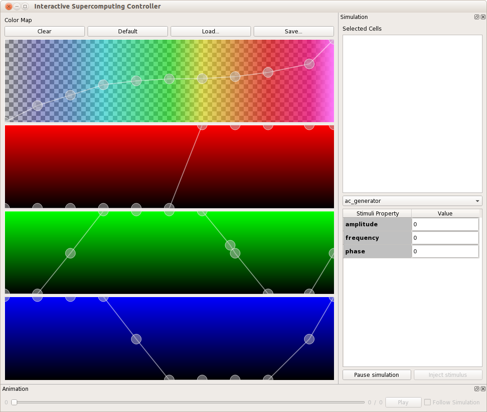

Table of Contents
- General Information
- Overview
- Installation
- Setup
- Getting Started
- Volume pre-processing tools
- Livre
- Interactive Scupercomputing Controller
General Information
Overview
Livre is a out-of-core volume rendering engine depending Equalizer and OpenGL for rendering, and Tuvok library for data management.
Installation
Setup
Livre, currently doesn't have Ubuntu or Redhat packages. It should be build from the source code at github.(The compiler should support the C++11 - minimum g++ 4.6 ). The basic building procedure is as below:
$ git clone https:
$ cd Livre
$ mkdir build
$ cd build
$ cmake ..
$ make
$ make install
The above commands will fetch the necessary packages and build the dependencies, and install the executables and libraries.
After a successful build and installation, the following executables will be available:
- livre (The command line render application)
- livre_batch.py (Python script to launch livre in batch mode using sbatch to render images on cluster nodes. Usage: livre_batch.py –config file.config)
- livreGUI (Transfer function editor, animation controller and simulation controller if Monsteer library is found )
- TuvokDataConverter (TuvokDataConverter)
Getting Started
Volume pre-processing tools
The volumetric data should be pre-processed in order to visualize in Livre. More information about the pipeline of preprocessing can be found at Tuvok Volume Data Generation tools page.
Livre
The volume renderer is executed through the command line. To test if the volume renderer is working, you can simply execute :
which will render an in memory test volume data structure. Here 1024, 1024 and 512 are the width, height and length of the volume in voxels, respectively. 32 is the block size and "mem://" is the scheme to generate in memory volume. You should be getting an image like below:
The command line parameters are shown below:
Application Parameters
--animation [=arg(=1)] (=0) Enable animation mode (optional frame
delta for animation speed, use
--animation=-<int> for reverse
animation)
--animation-follow-data Enable animation and follow volume data
stream (overrides --animation=value)
--frames arg (=[ 0 262143 ])
Frames to render [start end)
--num-frames arg (=4294967295) Maximum nuber of frames to render
--camera-position arg (=[ 0 0 1.5 ])
Camera position
--camera-lookat arg (=[ 0 0 0 ])
Camera orientation
--volume arg URI of volume data source
--transfer-function arg .1dt transfer function file (from
ImageVis3D)
Volume Renderer Parameters
--gpu-cache-mem arg (=3072) Maximum GPU cache memory (MB) - caches the
texture data in GPU memory
--cpu-cache-mem arg (=8192) Maximum CPU cache memory (MB) - caches the
volume data in CPU memory
--sse arg (=4) Screen space error
--synchronous Enable synchronous mode
--min-lod arg (=0) Minimum level of detail
--max-lod arg (=9) Maximum level of detail
--samples-per-ray arg (=0) Number of samples per ray. The value of 0
(default) sets the number of samples
automatically, based on the volume size
--samples-per-pixel arg (=1) Number of samples per pixel
The important parameters are :
- "--volume" URL of the volume ( i.e. mem://#1024,1024,1024,32 )
- "--sse" Quality of the rendering, the lower the value, the higher the quality. If value is 1, 1 pixel is 1 voxel, for lower quality values should be bigger than 1 (4 by default).
- "--synchronous" The frames are rendered only if all the data for the given frame is loaded. Otherwise the behaviour is to render the volume with the available data.
Interactive Scupercomputing Controller
This application provides the transfer function editor, animation controller and other controllers for the interactive super computing.
- Transfer function editor helps the users to attach different colors and opacities to voxel values. This editor automatically finds the livre application remotely and can modify the colors of the volumes. Each color channel and alpha channel can be modified separately. It is possible to see the histogram in the alpha channel. With the help of the histogram, users can set their colors and alphas to visualise specific part of the data.
- The animation controller lets you play wşth the frames in Livre. It is enabled when livre is executed using the "--animation" parameters.
- The simulation controllers are only enabled when Monsteer library is available. This controllers allows you to connect a running NEST simulation, see the selected neurons and let you inject stimuli on them.

Interactive Scupercomputing Controller Window
 1.8.11
1.8.11